Quem somos
Instituto Ser Tão Grande é uma entidade privada sem fins lucrativos que acredita na valorização da educação como forma de promover a equidade e criar impacto coletivo. Oferecemos oportunidades para jovens de baixa renda e alto potencial acadêmico cursando o ensino fundamental em escolas públicas por meio de bolsas de estudos, mentorias e apoio multidisciplinar durante todo o ensino médio, garantindo que esses jovens alcancem seu potencial, reduzindo as desigualdades de oportunidades em comparação àqueles que já têm privilégios.
Acredito que talentos podem ser encontrados em todas as camadas da população e que a educação pode mudar histórias individuais e familiares, gerando grande impacto social e institucional.
 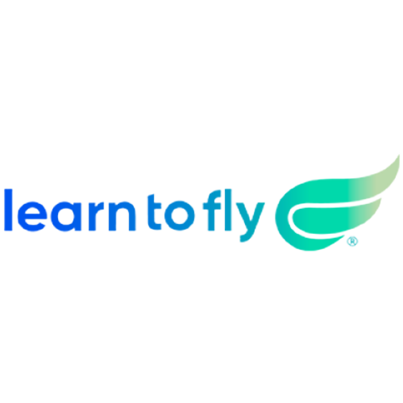
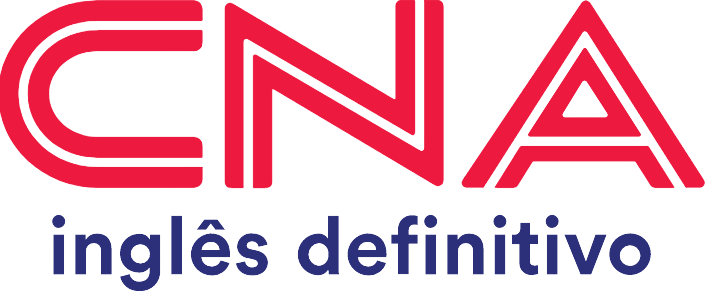
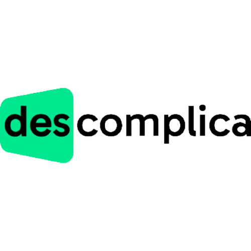
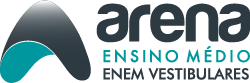
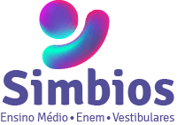
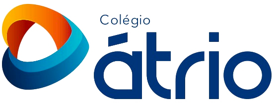
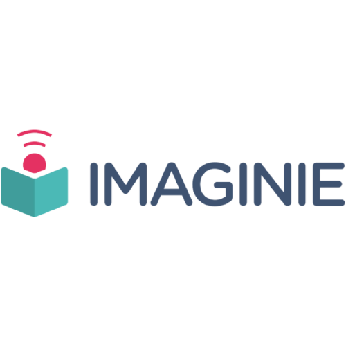
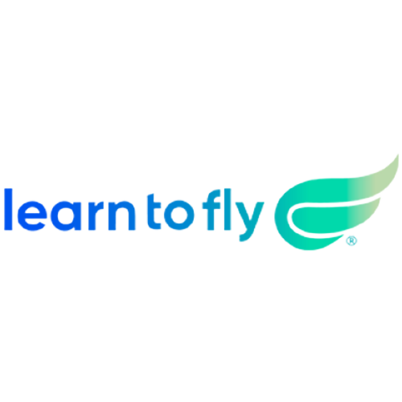
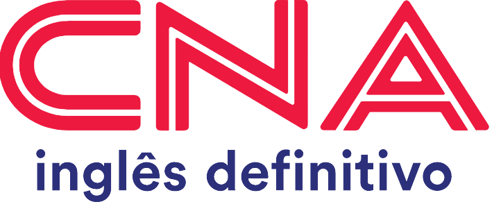
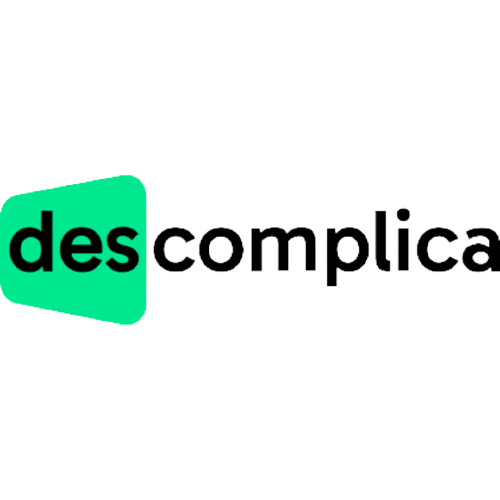
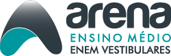
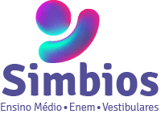
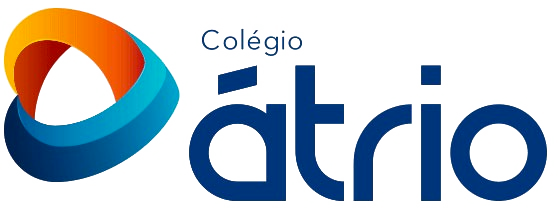
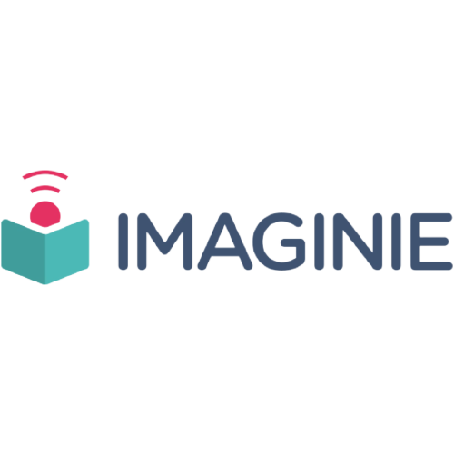